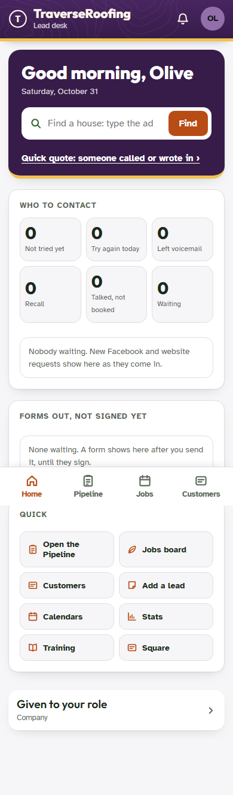

Deep review, 31 October 2026
Everything built on 29 and 30 October, read as a paying client lives it. The ranked findings, fixes and regression numbers are in REPORT.md; the tests are in tests/.
What was fixed
- HighAn email-and-password sign-in lost the person's permissions, lock state, super flag and session id until the app was reopened (one
signedIn()now). - MediumThe read-only Claude Check sign-in was handed the Sync link's secret key.
- MediumSetup rows (Zelle QR, Your service area, Training, End-of-day email, Facebook check now) answered "locked" in setup mode and bounced the admin back to Setup.
- MediumProspect Desk: the unsubscribe link unsubscribed on a bare GET, so mail scanners took companies off before anyone read the email. It now shows a page with one button.
- MediumProspect Desk: the queue was read and rewritten under two different locks (a lost batch or a double send was possible during the hourly run).
- Medium
diaglisted every other install's folders to any client admin; backups missed the Zelle QR code. - MediumCustomer emails: one mail-server hiccup spent a follow-up or aftercare email for good.
- MediumCheckout: the welcome page's brand step did not check the payment (logo files could be parked by an unpaid visitor); a retry kept the first attempt's email and password.
- LowThe update bar covered the phone menu bar; a right password still counted against the per-address limit; the welcome-page logo kept the white backing; cron-sent email links used our domain for a client on its own; the seats-over email said nothing is blocked; the welcome page's homes poll outran its rate limit; desk pictures and placeholders; nightly backup memory; "Your Traverse plan" on tiles; six Spanish strings.
Screenshot
